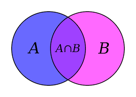

TEORIA DE CONJUNTOS
La forma más básica de estudiar las matemáticas es a través de la Teoría de Conjuntos.
Esta explica cómo en la antigüedad se asociaban características bien definidas a objetos,
por ejemplo: personas, animales, etc., es decir,
al conjunto de características comunes entre si y afines a cierta población de individuos u objetos bien definidos.
La lógica de Clases, también llamada Teoría de Conjuntos" tiene la particularidad de estudiar grupos
o conjuntos que en su totalidad tienen características comunes, donde estas clases iguales pueden ser
representadas utilizando esquemas o dibujos ovalados que indiquen esta característica.
La Teoría de Conjuntos, ha sido y fue un primer escalón en la matemática, lo que posteriormente
fue aplicado a la "Teoría de Circuitos Conmutados", que dio origen a las compuertas lógicas booleanas
desarrolladas por George Boole, quien vivió en el siglo XVIII. Boole identificó la relación entre la
lógica de Aristóteles y la Teoría de Conjuntos de George Cantor, para luego desarrollar a través de
la simbología, la interacción de palabras en una interacción con sujeto y un predicado.
Otros matemáticos desarrollaron la lógica de conmutadores que hoy en día son la base para
el desarrollo de nuevos dispositivos electrónicos digitales miniaturizados y más eficientes.
Ahora vemos de qué trata cada uno de estos temas y su relación hacia las ciencias de la ingeniería.
|
|
|
|---|---|
|  |

|